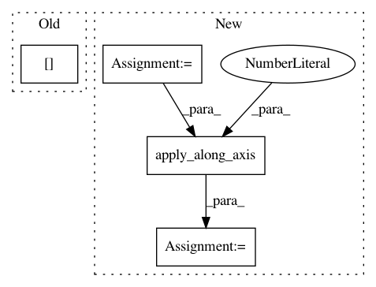

f4a5be4f4a404c30c9acaac2c2e691021d4715b0,mlxtend/preprocessing/mean_centering.py,MeanCenterer,transform,#MeanCenterer#,28
Before Change
self._get_array(X)
// centering
for i in range(self.ary.shape[0]):
self.ary[i] -= self.col_means
return self.ary
def fit(self, X):
After Change
self.col_means = None
def transform(self, X):
X_tr = np.copy(self._get_array(X))
X_tr = np.apply_along_axis(func1d=lambda x: x - self.col_means, axis=1, arr=X_tr)
return X_tr
def fit(self, X):
self.col_means = self._get_array(X).mean(axis=0)
In pattern: SUPERPATTERN
Frequency: 3
Non-data size: 4
Instances
Project Name: rasbt/mlxtend
Commit Name: f4a5be4f4a404c30c9acaac2c2e691021d4715b0
Time: 2015-12-10
Author: mail@sebastianraschka.com
File Name: mlxtend/preprocessing/mean_centering.py
Class Name: MeanCenterer
Method Name: transform
Project Name: Esri/raster-functions
Commit Name: 1aff9ce62a0c9db7f02b93830fed4073fed49bd1
Time: 2015-02-02
Author: jwasilkowski@esri.com
File Name: functions/LinearSpectralUnmixing.py
Class Name: LinearSpectralUnmixing
Method Name: updatePixels
Project Name: pgmpy/pgmpy
Commit Name: f58745ab284f48b7ef4ce813f5f8cd26bdb3c0a8
Time: 2015-06-16
Author: ankurankan@gmail.com
File Name: pgmpy/inference/Sampling.py
Class Name: BayesianModelSampling
Method Name: forward_sample